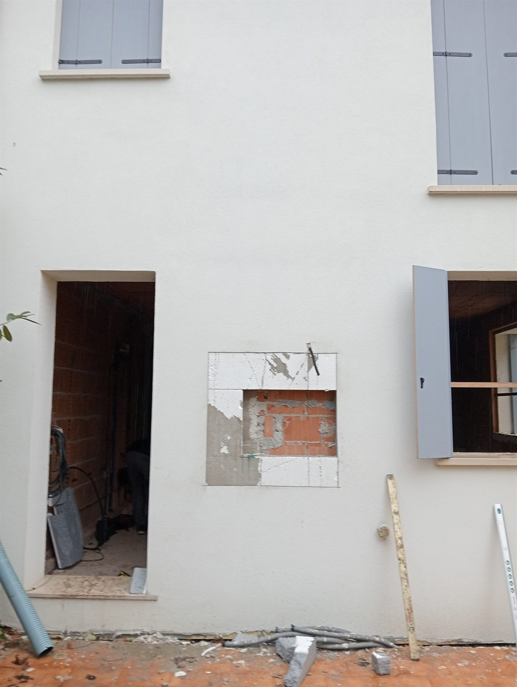
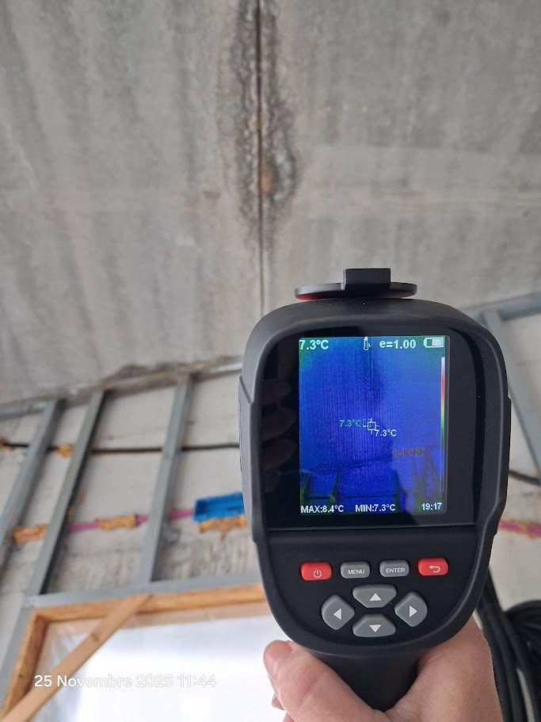
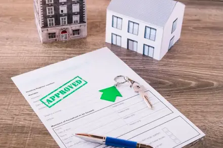
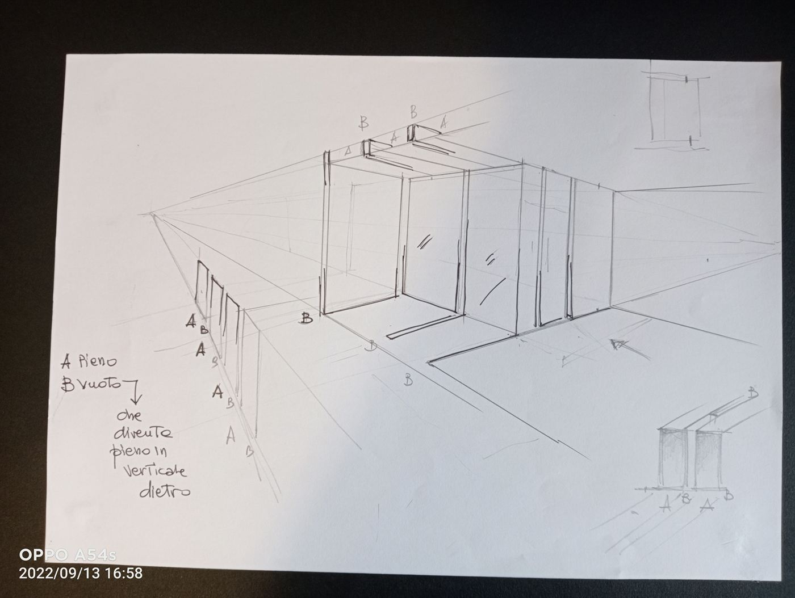
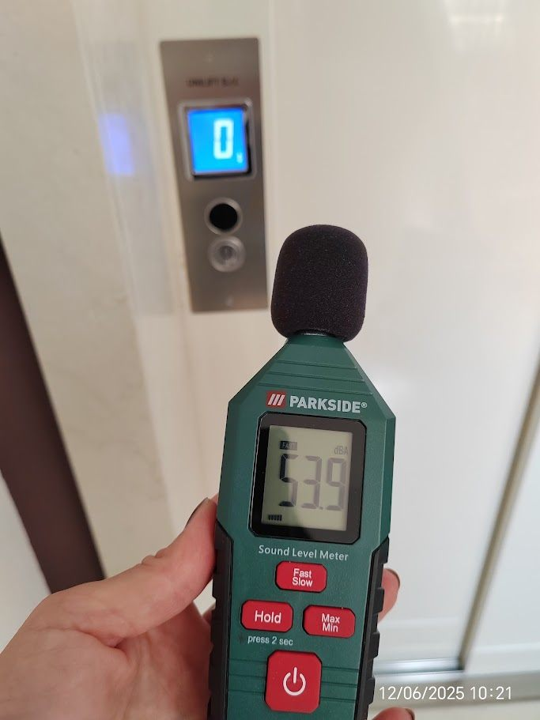

Servizi di
Architettura
Dalle certificazioni energetiche alle perizie forensi, dall'interior design alle facciate continue: un'offerta completa per ogni esigenza edilizia e progettuale.
Un metodo fondato su
competenza e ascolto
Ogni incarico, grande o piccolo, viene affrontato con la stessa intensità . Non esiste il "progetto di routine": dietro ogni certificazione energetica c'è una famiglia che vuole ridurre i costi; dietro ogni perizia c'è una persona che ha bisogno di certezze legali; dietro ogni intervento di interior design c'è qualcuno che sogna uno spazio più bello in cui vivere.
Collaboro stabilmente con ingegneri strutturisti, geometri, imprese edili e serramentisti per garantire soluzioni integrate. Il mio territorio di riferimento è il Veneto, con una presenza consolidata a Padova, Venezia, Treviso e Vicenza, ma opero su tutto il territorio nazionale e ho maturato esperienze internazionali.

Attestati di Prestazione Energetica (APE)
L'APE è il documento obbligatorio che certifica la classe energetica di un immobile. È richiesto per le compravendite, le locazioni, i lavori di ristrutturazione e l'accesso agli incentivi fiscali come il Superbonus e l'Ecobonus. Senza un APE valido, molte operazioni immobiliari non sono giuridicamente possibili.
Sono certificatrice energetica accreditata e ho emesso oltre 1.000 attestati in più di un decennio, con una percentuale di approvazione del 100% presso le autorità competenti. Opero su edifici residenziali, direzionali e commerciali, nuovi o esistenti.
- APE per compravendita e locazione
- APE per pratiche Superbonus 110% ed Ecobonus
- APE per banche e istituti di credito
- Diagnosi energetica e consulenza per la riqualificazione

Perizie Tecniche CTU & CTP
Da oltre un decennio sono Consulente Tecnico d'Ufficio (CTU) per il Tribunale civile di Padova in materia edilizia e immobiliare. Ho prodotto oltre 100 relazioni tecniche per cause civili riguardanti vizi costruttivi, difformità urbanistiche, divisioni ereditarie, stime patrimoniali e controversie contrattuali.
Opero anche come Consulente Tecnico di Parte (CTP) per assistere privati e aziende nella lettura e nella contestazione di perizie avverse. Ogni relazione è redatta con rigore metodologico, linguaggio chiaro e documentazione fotografica e grafica dettagliata.
- Perizie CTU per il Tribunale di Padova
- Consulenza CTP per assistenza a privati e imprese
- Vizi costruttivi e difformità edilizie
- Divisioni ereditarie e stime patrimoniali
- Contenziosi da appalto

Perizie per Mutui e Banche
Le banche e gli istituti di credito richiedono una perizia tecnica estimativa prima di concedere un finanziamento immobiliare. È una procedura delicata che richiede precisione, conoscenza del mercato locale e capacità di analisi strutturale dell'immobile.
Ho prodotto oltre 1.000 perizie per mutuo in oltre un decennio, per abitazioni private, locali commerciali, capannoni industriali, terreni agricoli ed edifici in costruzione. Le valutazioni vengono effettuate secondo i più aggiornati standard tecnici ed estimativi e rispettano le linee guida bancarie.
- Perizie per istituti bancari e finanziarie
- Immobili residenziali, commerciali e industriali
- Edifici finiti e in costruzione
- Terreni agricoli e lotti edificabili
- Valutazioni per esecuzioni immobiliari

Edilizia Civile & Pratiche Edilizie
Progetto edifici residenziali, commerciali e direzionali in collaborazione con ingegneri strutturisti e imprese edili partner. Il mio approccio mira sempre all'integrazione tra forma e funzione, rispettando i tempi, i costi e le aspettative del committente.
Gestisco l'iter burocratico completo: dalla SCIA alla DIA, dalla CIL alla variante in corso d'opera, fino all'agibilità e al collaudo. La conoscenza approfondita delle normative comunali e regionali del Veneto mi permette di ottimizzare i tempi delle pratiche.
- Progettazione residenziale e commerciale
- Ristrutturazioni e ampliamenti
- Pratiche SCIA, DIA, PdC, CIL
- Agibilità e conformità urbanistica
- Direzione Lavori

Arredamento & Interior Design
Ogni spazio interno racconta una storia. Lavoro con i committenti per capire come vivono, che colori li emozionano, quale luce preferiscono, come immaginano la loro cucina o il loro studio. A partire da queste informazioni creo progetti d'interni personalizzati, coerenti e funzionali.
Collaboro con artigiani e fornitori locali selezionati per garantire materiali di qualità a costi controllati. I miei progetti si distinguono per la cura del dettaglio, la scelta dei materiali e la capacità di valorizzare ogni metro quadro disponibile.
- Progettazione d'interni residenziali e commerciali
- Planimetrie funzionali e distribuzione spazi
- Selezione materiali, rivestimenti e arredi
- Illuminotecnica e impianti nascosti
- Render 3D e visualizzazioni fotorealistiche

Progettazione di Facciate Continue
La facciata è il volto di un edificio: ne definisce l'identità , ne protegge la struttura e ne determina le prestazioni energetiche. Progetto facciate continue, ventilate e sistemi di rivestimento con materiali tecnici di alto livello — vetro, alluminio, pietra naturale, compositi.
Ogni progetto di facciata viene sviluppato tenendo conto del contesto urbanistico, delle normative locali, delle prestazioni termoacustiche richieste e del budget disponibile. Collaboro con serramentisti e posatori specializzati per garantire una posa a regola d'arte.
- Facciate continue in vetro e alluminio
- Sistemi di rivestimento ventilato
- Isolamento a cappotto con finitura decorativa
- Serramenti ad alta prestazione energetica

Rivestimenti Acustici & Sottostrutture
Il comfort acustico di un ambiente incide profondamente sulla qualità della vita di chi lo abita o ci lavora. Progetto sistemi di rivestimento acustico e sottostrutture per pareti, soffitti e pavimenti, applicati in contesti residenziali, scolastici, commerciali e ricettivi.
Le soluzioni vengono dimensionate in base ai requisiti normativi previsti dal D.P.C.M. 5/12/97 e successive integrazioni, con scelta dei materiali fonoisolanti e fonoassorbenti più adeguati alla destinazione d'uso dell'ambiente.
- Pareti fonoassorbenti e contropareti
- Soffitti acustici sospesi
- Pavimenti galleggianti antivibranti
- Certificazione acustica degli ambienti

Strutture Metalliche & Spazi Esterni
Il confine tra interno ed esterno è sempre più fluido nell'architettura contemporanea. Progetto strutture metalliche su misura per completare e valorizzare gli spazi aperti: pergolati bioclimatici, gazebo, recinzioni artistiche, ringhiere, scale esterne e passerelle.
Ogni struttura viene progettata con attenzione alla durabilità nel tempo, alla resistenza agli agenti atmosferici e all'integrazione estetica con l'edificio esistente. Lavoro con carpentieri metallici specializzati per garantire finiture di qualità .
- Pergolati bioclimatici e gazebo
- Recinzioni e cancelli su misura
- Ringhiere e parapetti
- Scale esterne in ferro e acciaio
- Passerelle e strutture di collegamento

Collaudi Statici
Il collaudo statico è l'atto finale che certifica la conformità di un'opera strutturale al progetto approvato e alle normative vigenti. È obbligatorio per le strutture in cemento armato, acciaio o elementi prefabbricati, e costituisce un documento indispensabile per ottenere l'agibilità .
Effettuo sopralluoghi in cantiere nelle fasi di avanzamento dei lavori, verifico la documentazione di cantiere (libretti delle misure, registri dei controlli, certificati dei materiali) e redigo la relazione di collaudo secondo le NTC 2018.
- Collaudi per strutture in c.a., acciaio e prefabbricato
- Sopralluoghi in corso d'opera
- Relazione di collaudo NTC 2018
- Verifica documentazione tecnica di cantiere

Come Lavoriamo Insieme
Un processo chiaro e trasparente, dove il cliente è sempre informato e coinvolto.
Consulenza Iniziale
Un incontro (di persona, telefonico o in video-call) per capire le esigenze, valutare fattibilità e costi, e rispondere a ogni domanda. Sempre gratuita e senza impegno.
Progettazione & Analisi
Sopralluogo, raccolta dati, analisi documentale e sviluppo del progetto o della perizia. Ogni fase è condivisa con il cliente prima di procedere.
Realizzazione
Esecuzione dell'incarico con aggiornamenti periodici, gestione delle pratiche burocratiche e coordinamento con gli altri professionisti coinvolti.
Consegna & Assistenza
Consegna della documentazione completa e assistenza post-consegna per eventuali integrazioni, chiarimenti o aggiornamenti futuri.
Iniziamo
il tuo progetto
Compila il modulo di contatto specificando il servizio di cui hai bisogno. Ti risponderò entro 24 ore.
Richiedi Preventivo